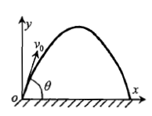

运动学简介
运动学，顾名思义，就是研究物体运动的学问。
一般而言，在平面上运动的物体都有两个自由度——\(x\)、\(y\)（笛卡尔坐标系内）；\(r\)、\(\theta\)（极坐标系）与别的奇奇怪怪的坐标系内的两个自由度。相应地，在三维就有三个自由度。
速度、加速度的定义式
我们可以把质点的运动写成关于原点 \(O\) 的位矢（关于时间的）函数，即
\[\vec{r}=\vec{r}(t).\]
其分量方程就是
\[x=x(t),\quad y=y(t),\quad z=z(t).\]
那么，一个物体的位移 \(\Delta\vec{r}\) 就可以写成
\[\Delta\vec{r} = \Delta x \hat{\mathbf{i}}+\Delta y \hat{\mathbf{j}}+\Delta z \hat{\mathbf{k}}\]
其中 \(\hat{\mathbf{i}}\)、\(\hat{\mathbf{j}}\)、\(\hat{\mathbf{k}}\) 分别是三个方向的单位矢量。
那么质点在它运动的过程中，由于速度是时间的导数，速度可以写成
\[\vec v = \frac{\mathrm d\vec r}{\mathrm dt} = \lim_{\Delta t\to 0}\frac{\Delta\vec r}{\Delta t},\quad
v = \frac{\mathrm dr}{\mathrm dt} = \lim_{\Delta t\to 0}\frac{\Delta r}{\Delta t}.\]
其中 \(\Delta x=\left|\Delta\vec{x}\right|\)，\(\vec{x}\) 为任意矢量。同理可以定义加速度为
\[\vec a = \frac{\mathrm d\vec v}{\mathrm dt} = \lim_{\Delta t\to 0}\frac{\Delta\vec v}{\Delta t},\quad
a = \frac{\mathrm dv}{\mathrm dt} = \lim_{\Delta t\to 0}\frac{\Delta v}{\Delta t}.\]
在这个简介里，我们将会推导斜抛公式及其变式作为开始的练习。
斜抛运动

如图所示，一个质点从原点以初速度 \(v_0\) 沿着与水平方向成 \(\theta\) 角的方向出射，重力加速度为 \(g\)。
我们一般采用将速度沿着水平方向和竖直方向的分解方法，即分解为
\[
\begin{align}
x & = v_0\cos\theta \cdot t,\tag{1}\\
y & = v_0\sin\theta \cdot t - \dfrac{1}{2}gt^2.\tag{2}
\end{align}
\]
常用的消元法是将 \(t\) 替换为 \(\dfrac{x}{v_0\cos\theta}\)，然后带入 \((2)\)，得到
\[
y = v_0\sin\theta \cdot \dfrac{x}{v_0\cos\theta} - \dfrac{1}{2}g\left(\dfrac{x}{v_0\cos\theta}\right)^2.
\]
化简得到
\[
y = x\tan\theta - \dfrac{gx^2}{2v_0^2}(1+\tan^2\theta).\tag{3}
\]
我们利用 (1) 至 (3) 式，来做一道题目。
例题（程书【练习 2-7】）
如图所示，高为 \(h\) 的旗杆顶端有一物 \(P\)，一男孩在离旗杆底端 \(A\) 距离 \(s\) 处的 \(O\) 点，欲用弹弓弹射小石块击中物 \(P\)。已知弹弓弹射出的小石块初速度为 \(v_0\)，问小石块能击中物 \(P\) 的最小 \(v_0\) 值为多少？相应的弹射角（弹射方向与水平方向的夹角）为多大？
解答
我们考虑将 \(O\) 点定为坐标原点。
那么，\(P\) 点坐标为 \((s, h)\)。考虑带入 (3) 式，变成
\[h = s\tan\theta - \dfrac{gs^2}{2v_0^2}(1+\tan^2\theta).\tag{3a}\]
将 (3a) 式变形为以 \(\tan\theta\) 为未知数的方程，即
\[\tan^{2} \theta-\frac{2 v_{0}^{2}}{g s} \tan \theta+\frac{2 v_{0}^{2}}{g s^{2}} h+1=0.\tag{3b}\]
观察得到，\(v_0\downarrow\)，\(|\tan\theta_1-\tan\theta_2|\downarrow\)（\(\tan\theta_1,\,\tan\theta_2\) 为原方程的两个解）。从而得到
\[\Delta = 0\]
即
\[\left(\frac{v_{0}^{2}}{g s}\right)^{2}-\left(\frac{2 v_{0}^{2}}{g s^{2}} h+1\right)=0\]
解得
\[v_{0}^{4}-2 g h v_{0}^{2}-g^{2} s^{2}=0\]
即
\[v_{0}=\sqrt{g\left(h+\sqrt{h^{2}+s^{2}}\right)}\]
进一步可以得到
\[\tan\theta=\frac{v_{0}^{2}}{g s}=\frac{1}{s}\left(h+\sqrt{h^{2}+s^{2}}\right)\]